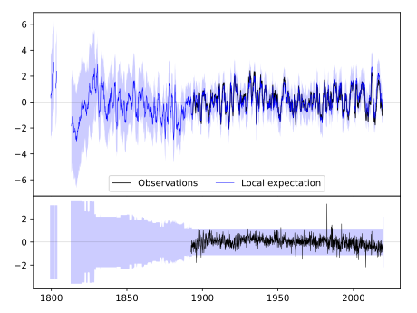
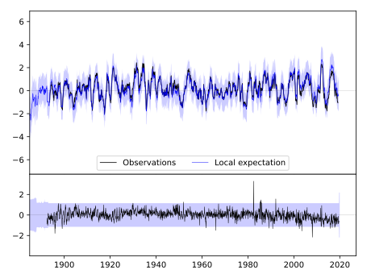
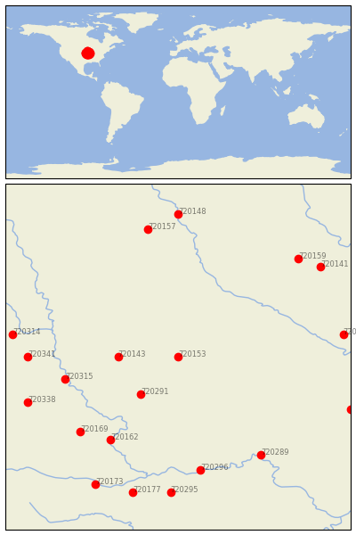

MT AYR [USA]


| Neighbour | Name | Country | Distance | Lon/Lat | Years |
|---|
| 720153 | MT AYR | USA | 0 | -94.2, 40.7 | 1892-2019 |
| 720143 | CLARINDA | USA | 67 | -95.0, 40.7 | 1872-2019 |
| 720291 | CONCEPTION | USA | 69 | -94.7, 40.2 | 1888-2019 |
| 720315 | AUBURN 5 ESE | USA | 131 | -95.7, 40.4 | 1893-2019 |
| 720162 | ATCHISON | USA | 144 | -95.1, 39.6 | 1865-2019 |
| 720169 | HORTON | USA | 156 | -95.5, 39.7 | 1888-2019 |
| 720341 | SYRACUSE | USA | 168 | -96.2, 40.7 | 1871-2019 |
| 720296 | LEXINGTON 3E | USA | 168 | -93.9, 39.2 | 1878-2019 |
| 720289 | BRUNSWICK | USA | 172 | -93.1, 39.4 | 1889-2019 |
| 720338 | PAWNEE CITY | USA | 182 | -96.2, 40.1 | 1882-2019 |
| 720314 | ASHLAND NO 2 | USA | 188 | -96.4, 41.0 | 1888-2019 |
| 720146 | FAIRFIELD | USA | 188 | -92.0, 41.0 | 1855-2019 |
| 720157 | ROCKWELL CITY | USA | 191 | -94.6, 42.4 | 1893-2019 |
| 720159 | TOLEDO 3N | USA | 196 | -92.6, 42.0 | 1893-2019 |
| 720295 | LEES SUMMIT REED WR | USA | 200 | -94.3, 38.9 | 1863-2019 |
| 720177 | OLATHE 3E | USA | 206 | -94.8, 38.9 | 1864-2019 |
| 720141 | BELLE PLAINE | USA | 207 | -92.3, 41.9 | 1889-2019 |
| 720302 | STEFFENVILLE | USA | 209 | -91.9, 40.0 | 1893-2019 |
| 720173 | LAWRENCE | USA | 211 | -95.3, 39.0 | 1868-2019 |
| 720148 | FORT DODGE 5NNW | USA | 211 | -94.2, 42.6 | 1851-2019 |